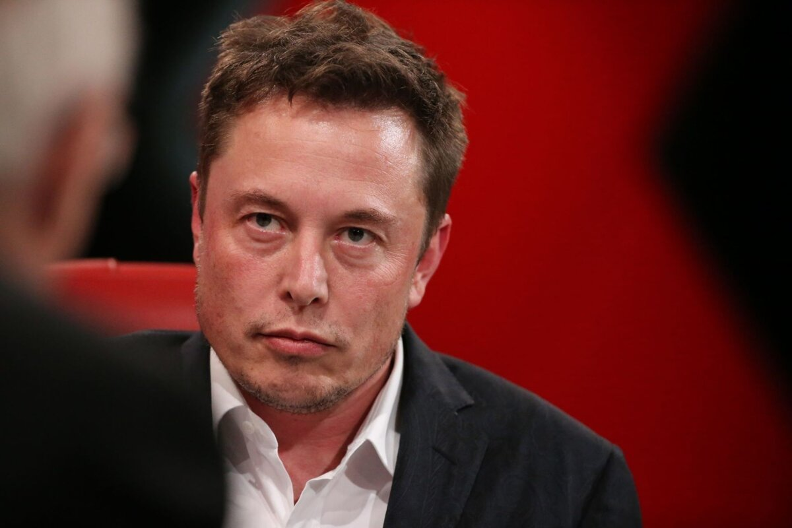

В воскресенье Маск подтвердил в X, что SpaceXAI переименуют в SpaceXSI: буквы AI в названии заменят на SI — от «Super Intelligence» («сверхинтеллект»). Формальный повод — указ Дональда Трампа, подписанный на прошлой неделе и предписывающий переходить к термину «Super Intelligence» вместо «artificial intelligence». Сам Трамп 29 сентября встречался с боссами ИИ-индустрии в Белом доме и подписал с ними «Соглашение о сверхинтеллекте»; судя по всему, переименование Маска — жест в ту же сторону.
SpaceXAI существует всего с июля этого года: тогда SpaceX консолидировала ИИ-бизнес Маска (xAI, созданный в 2023-м и поглощённый X/Twitter) в одну структуру. Таким образом, подразделение меняет вывеску второй раз за квартал: xAI → SpaceXAI → SpaceXSI. Отдельного официального пресс-релиза компания не публиковала — анонсом стал личный пост Маска в X.
Слово «суперинтеллект» Маск эксплуатирует давно: он ещё в 2014-м финансировал продвижение книги Ника Бострома «Superintelligence» и называл неконтролируемый сверхинтеллект опаснее ядерного оружия. Сейчас термин становится официальной лексикой вашингтонской ИИ-политики, а Grok по контракту обслуживает часть госзадач — так что ребрендинг читается и как политическая лояльность, и как маркетинг: «компания сверхинтеллекта» вместо очередной «ИИ-компании».
Для продуктов (Grok, Grok Code) пока не меняется ничего — это смена названия, а не архитектуры. Но показательна сама скорость: указ подписан на прошлой неделе, а крупнейшая ИИ-структура страны уже примеряет новую терминологию. Если «SI» закрепится в документах и отчётности, за Маском потянутся остальные — язык индустрии снова перепишут сверху.